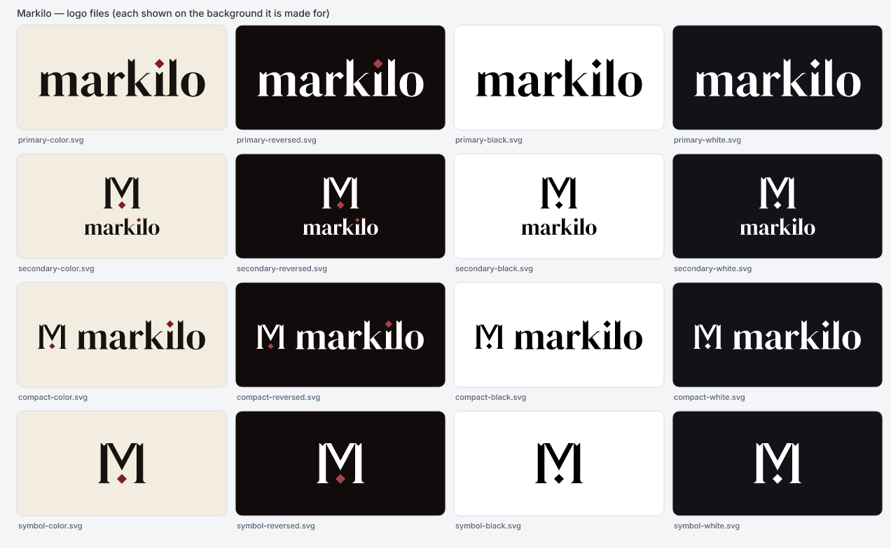
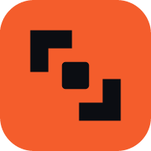
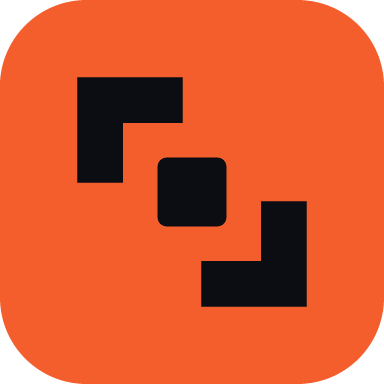
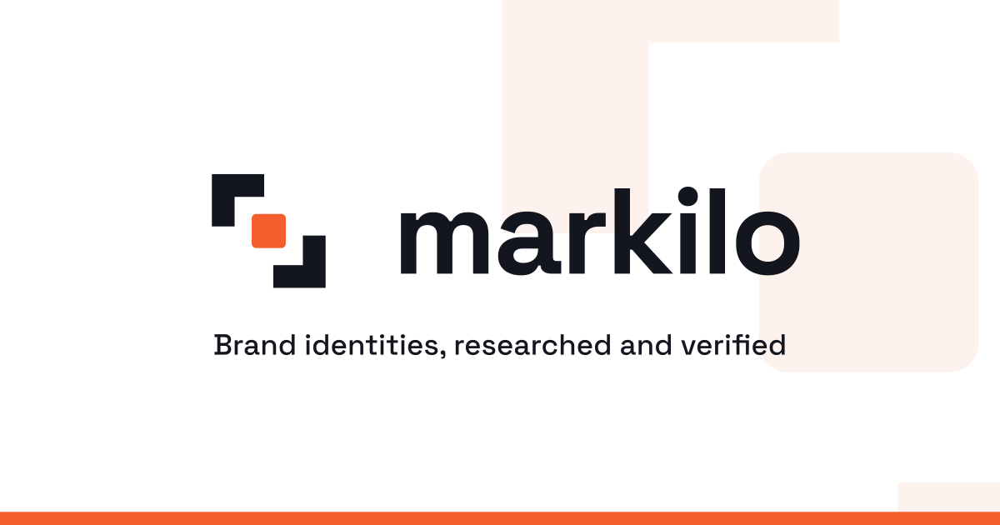
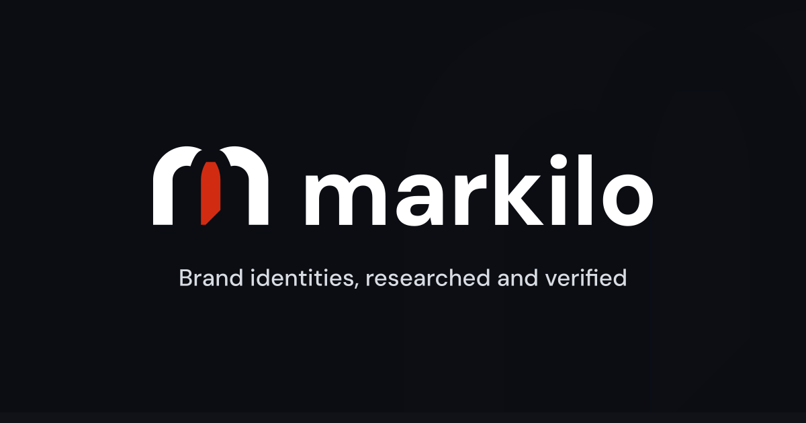
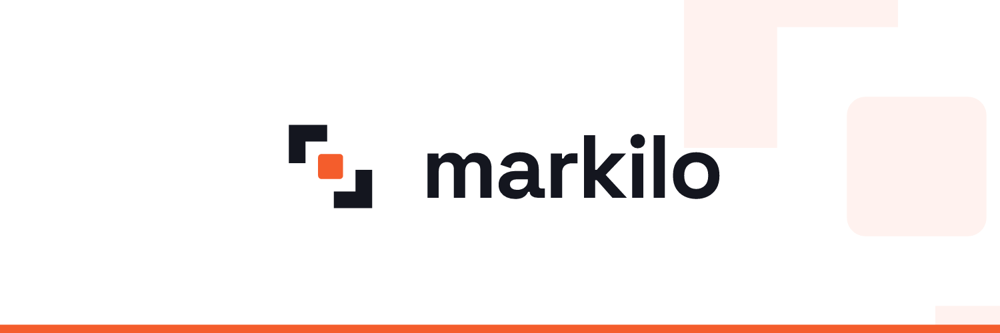
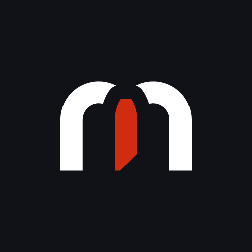

Markilo
- Three proposals
- Compare
- Select or request changes
- Finalize
- Export
62 files · every file below is shown on the background it is made for · README.md · asset-manifest.json
primary
#7E1D2Aink #16120Fpaper #F2ECE1dark #120b0bStart here
| Your logo (the wordmark) | logos/primary/primary-color.svg |
| Logo on dark backgrounds | logos/primary/primary-reversed.svg |
| The symbol alone | logos/symbol/symbol-color.svg |
| App icon, avatar | logos/appmark/appmark.png |
| Website icons (paste into <head>) | web/head-snippet.html |
| Link preview image | social/og-image.png |
| Colors as CSS variables | tokens/tokens.css |
| How to use it | guidelines/index.html |


logos/ 35 files — every logo in color, reversed, black and white, as SVG and transparent PNG
colorreversedblackwhite
Primary — the default


Secondary — stacked, for square-ish spaces


Compact — navigation bars and tight spaces


Symbol — the mark alone



overview.png1272×784 · Overview of every logo file on its intended backgroundappmark/appmark.svg1 KB · Appmark: symbol on brand tile (avatars, app listings)

appmark/appmark.png1024×1024 · Appmark PNG 1024
web/ 11 files — favicons, home-screen icons, the web manifest and head-snippet.html to paste into your <head>
favicon.svg1 KB · SVG favicon (adapts to dark browser UI)

favicon-32.png32×32 · 32 px PNG favicon (for frameworks that expect a PNG, e.g. Flutter web)

apple-touch-icon.png180×180 · Apple touch icon 180×180, opaque



icon-192.png192×192 · Web app manifest icon 192×192 (purpose any)

icon-384.png384×384 · Web app manifest icon 384×384 (purpose any)icon-512.png512×512 · Web app manifest icon 512×512 (purpose any)

icon-maskable-192.png192×192 · Maskable icon 192×192 (content inside the 40% safe circle)

icon-maskable-512.png512×512 · Maskable icon 512×512 (content inside the 40% safe circle)

| favicon.ico | Legacy favicon (16/32/48 px) |
| site.webmanifest | Web app manifest |
| head-snippet.html | HTML <head> tags for the web icons |
tokens/ 3 files — colors and type as JSON and CSS variables
| tokens.json | Design tokens (W3C DTCG format) |
| tokens.css | CSS custom properties |
| palette.json | Palette with contrast pairs and warnings |
guidelines/ 2 files — how to use the identity (HTML and Markdown)
| brand-guidelines.md | Brand usage guidelines (Markdown) |
| index.html | Brand usage guidelines (self-contained HTML) |
social/ 11 files — link previews, profile covers and the avatar

og-image.svg3 KB · Open Graph / link preview image (editable source)
og-image-dark.svg3 KB · Open Graph image on the alternate (dark) ground (editable source)
x-header.png1500×500 · X (Twitter) profile header 1500×500
avatar-500.png500×500 · Profile avatar 500×500 (content safe inside circle crops)